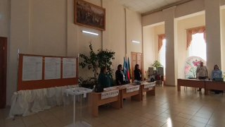
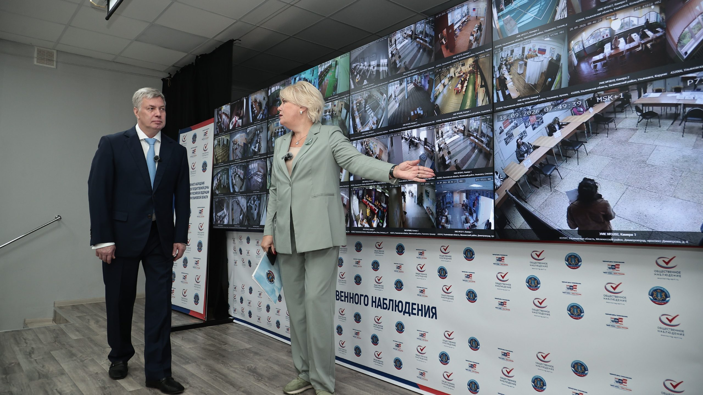
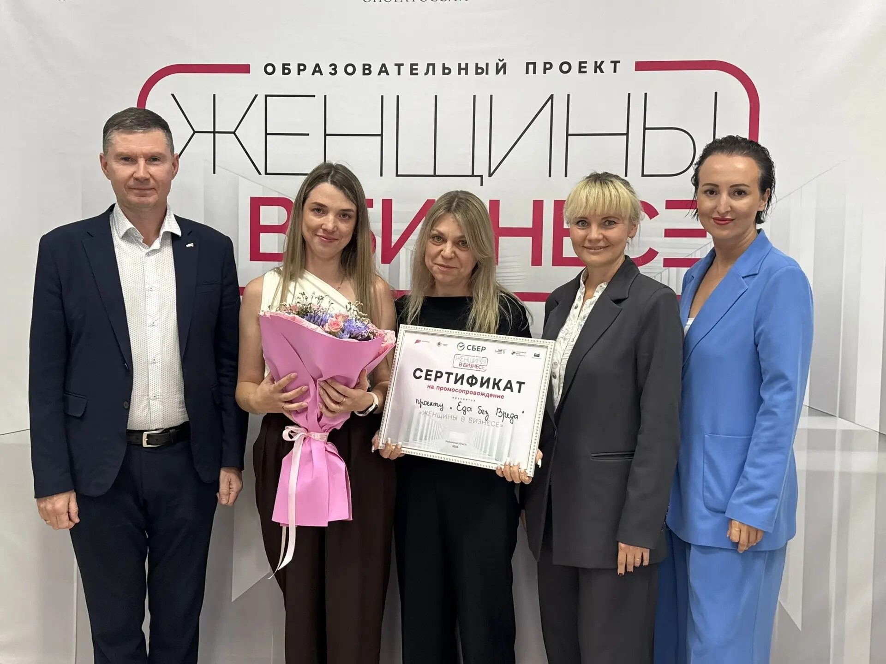

01
Политика и выборы · событие дня
Праздничная программа пройдёт с 29 сентября по 2 октября.…

Жители ульяновского региона проявляют высокую гражданскую активность — за первый день на участки пришли без малого 270 тысяч человек — почти в 2 раза больше, чем в 2021 году.…


Избирательные участки региона будут работать до 20:00.…
«Сегодня я пришла на выборы не только как избиратель, но и как человек, который каждый день видит, чем живёт наш дом и какие вопросы волнуют его жителей.…

Теперь законопроект планируют внести в Госдуму. Надо?…

Сегодня голосование вновь продлится до 20.00.…

Самую высокую сознательность в Ульяновске проявили жители первого округа Засвияжского района (ТИК №1) с результатом 35,34%.…

18 сентября губернатор Алексей Русских ознакомился с работой Центра общественного наблюдения, где в режиме реального времени ведется трансляция хода голосования.…


18 сентября под руководством губернатора Алексея Русских состоялось заседание Инвестиционного комитета. Мероприятие прошло на площадке одного из резидентов индустриального парка «Заволжье» – завода «Гиславед».…

✅ Скидка 50% на любой вид чистки — сделай улыбку ярче за полцены.…

18 сентября на площадке креативного пространства «Горизонт» в Димитровграде состоялся финал образовательной программы для начинающих бизнес-леди.…

В Правительстве региона состоялась рабочая встреча губернатора Алексея Русских с официальной и бизнес-делегацией Посольства Республики Мозамбик в Российской Федерации во главе с Чрезвычайным и Полномочным Послом Жозе Матеушем Муария Катупха.…


Кому особенно рекомендуется прививка? 🔹 детям 🔹 пожилым людям 🔹 медицинским работникам 🔹 педагогам 🔹 жителям с хроническими заболеваниями Когда лучше прививаться?…
Специалисты Чердаклинской районной больницы провели профилактическую акцию «Кардиодесант» для сотрудников Чердаклинского районного Дома культуры.…


Вместе с новым ФГОС также пересмотрят программы по математике, физике, химии и биологии, сделав упор на практические задачи Потянут или еще добавить?…

По инициативе главы областного центра Александра Болдакина в городских школах уделяется особое внимание трудовому воспитанию детей, которое, в том числе, развивает социальные навыки.…

Перевернута горка и куча мусора вокруг», — сообщила наша подписчица.…

Возможность обучения в профильном предпрофессиональном классе появилась у димитровградских старшеклассников с нового учебного года.…


Ранее это количество на одного обучающегося составляло не менее 2,170 часов.


В аэропорту Ульяновска (Баратаевка) в 10:55 возобновлен прием и отправка рейсов, сообщили в Росавиации.…

В исправительной колонии №9 УФСИН России по Ульяновской области сотрудники отдела охраны учреждения пресекли попытку провоза запрещенных предметов на режимную территорию.…

В управлении МЧС России по Ульяновской области подвели итоги минувших суток.…

В дежурную часть МО МВД России «Димитровградский» поступило сообщение о совершении покупателями одного из торговых центров мошенничества при оплате приобретенного товара.…

Схема вскрылась на кассе. Ущерб магазину составил более 3,5 тысячи рублей. Обеих женщин доставили в отдел полиции.…


14 сентября на заседании штаба по комплексному развитию региона обсудили ход уборочной кампании, проведение сева озимых культур и основные задачи по выполнению комплекса осенних полевых работ.…
Власти рекомендуют устанавливать цены на продукцию на 15–20% ниже магазинных.…


Губернатор Алексей Русских осмотрел дошкольное образовательное учреждение во время рабочей поездки в район 18 сентября.…

К административной ответственности привлекли 2 304 человека.…


А движение транспорта по дороге было достаточно интенсивным, что создавало угрозу безопасности людей.…


Это произошло вчера около 19 часов, сообщает «ЧП Ульяновск». 🤬 — это опасно! ❤️ — пусть катаются……


С 2027 года учебная нагрузка вырастет на 140 часов в год — увеличение числа занятий одобрили в Минпросвещения.

Наша команда возглавила медальный зачёт — как по общему числу наград, так и по золоту! В копилке наших спортсменов 19 наград: 🥇 10 золотых, 🥈 4 серебряных и 🥉 5 бронзовых.
Ульяновская «Волга» проиграла «Спартаку» из Костромы в матче 12-го тура футбольной Первой лиги.…


Праздничная программа пройдёт с 29 сентября по 2 октября. Для жителей подготовят концерты, викторины в библиотеках, бесплатное посещение музейных экспозиций и другие тематические мероприятия.…
В Ульяновском областном краеведческом музее - открытие.…


| Тема | Завтра | Ожидание | Уверенность |
|---|---|---|---|
| Выборы-2026 | ↑ рост | ~49.6 упоминаний | средняя |
| День города (378 лет) | ↓ спад | ~0.0 упоминаний | средняя |
| Культура и туризм | ↓ спад | ~1.9 упоминаний | высокая |
| Спорт | ↓ спад | ~8.2 упоминаний | средняя |
| Медицина | ↓ спад | ~6.5 упоминаний | средняя |
| Школы и вузы | ↓ спад | ~17.2 упоминаний | средняя |